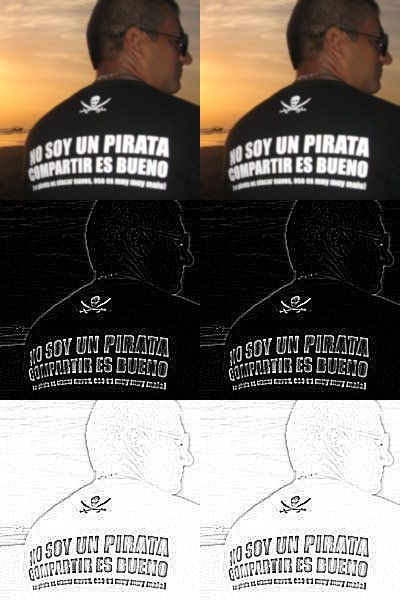

imágenes mágicas | imagemagick
index | OSiUX | blog | docs | charlas | rss
Descripción breve
Resolución a problemas comunes en la manipulación de imágenes mediante la generación de scripts usando ImageMagick y otras utilidades. Creación y edición de imágenes sin usar un editor gráfico, directamente desde una consola. Generar un video a partir de fotografías.
Crear Imagen
convert -size 640x480 xc:green img/green.png

identify
identify img/green.png
img/green.png PNG 640x480 640x480+0+0 8-bit sRGB 2c 326B 0.000u 0:00.000
Creative Commons
cd img convert green.png -fill white \ -font ~/bin/cc-icons.ttf \ -pointsize 32 -gravity SouthEast \ -annotate 0 'cb' \ green-cc-by.jpg
dark
composite -compose colorburn gradient.png \
green-cc-by.jpg dark-green.jpg
font
convert dark-green.jpg -fill white \ -font /usr/share/fonts/truetype/ttf-lucida/LucidaSansRegular.ttf \ -pointsize 32 -gravity NorthWest \ -annotate 0 'SASOConf 2014' \ green-font.jpg

gray
convert osiux-color.jpg +dither -colors 2 -colorspace gray -contrast-stretch 0 osiux-2-grises.jpg convert osiux-color.jpg +dither -colors 4 -colorspace gray -contrast-stretch 0 osiux-4-grises.jpg convert osiux-color.jpg +dither -colors 8 -colorspace gray -contrast-stretch 0 osiux-8-grises.jpg convert +append osiux-color.jpg osiux-2-grises.jpg osiux-4-grises.jpg osiux-8-grises.jpg
edge
cd img
convert no-soy-un-pirata-compartir-es-bueno.jpg -colorspace Gray -edge 1 gris-edge.jpg

edge + Negate
cd img
convert no-soy-un-pirata-compartir-es-bueno.jpg -colorspace Gray -edge 1 -negate gris-edge-negate.jpg
edge + negate + blur
for i in {1..4};do convert osiux-edge-$i-negate.jpg -blur 0x1 osiux-edge-$i-negate-blur.jpg;done
convert +append osiux-edge-1-negate-blur.jpg osiux-edge-2-negate-blur.jpg osiux-edge-3-negate-blur.jpg osiux-edge-4-negate-blur.jpg osiux-edge-negate-blur.jpg
charcoal (edge + negate + blur)
for i in {1..4};do convert osiux-color.jpg -charcoal $i osiux-charcoal-$i.jpg;done
convert +append osiux-charcoal-1.jpg osiux-charcoal-2.jpg osiux-charcoal-3.jpg osiux-charcoal-4.jpg osiux-charcoal.jpg
append
cd img
convert -append no-soy-un-pirata-compartir-es-bueno.jpg gris-edge.jpg gris-edge-negate.jpg append.jpg
convert +append append.jpg append.jpg 3x3.jpg
